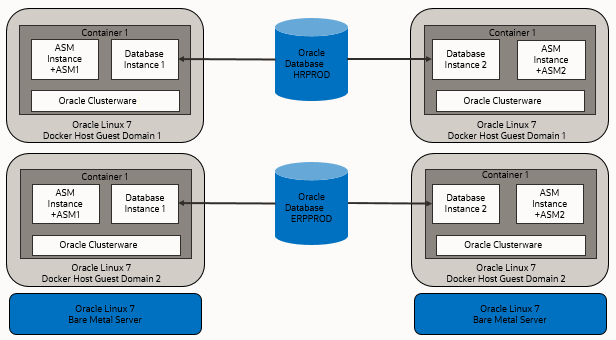
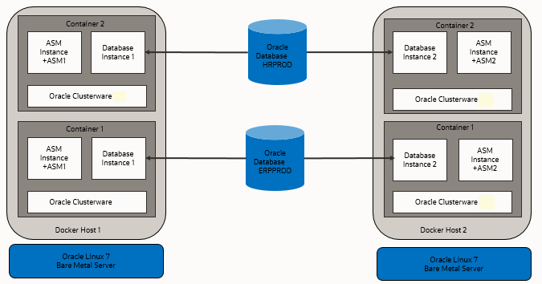
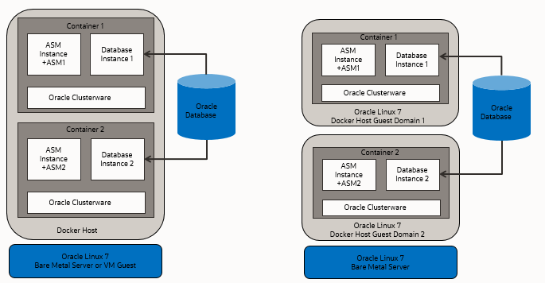

1 How to Install and Configure Oracle RAC on Docker
Use these instructions to install Oracle Real Application Clusters (Oracle RAC) on Oracle Container Runtime for Docker.
In this publication, the Linux server hosting the Docker containers is referred to as the Docker host, or just the Host. The Docker containers running the Oracle RAC, Oracle Grid Infrastructure, and Oracle Automatic Storage Management (Oracle ASM) are collectively referred to as the Docker Oracle RAC Container, or just the Oracle RAC Container.
- Prerequisites for Oracle RAC on Docker
Before beginning to deploy Oracle Real Application Clusters (Oracle RAC) on Docker, ensure that you are prepared for the installation, and that your system meets software and storage requirements. - Target Configuration for Oracle RAC on Docker
The procedures in this document are tested for a 2-node Oracle RAC cluster running on two separate Linux host servers, and using block devices for shared storage. - Provisioning the Docker Host Server
You can provision the Linux server hosting Docker (the Docker host server) either on a bare metal (physical) server, or on an Oracle Linux Virtual Machine (VM). - Docker Host Preparation
Before you can install Oracle Grid Infrastructure and Oracle Real Application Clusters, you must install Oracle Container Runtime for Docker. - Build the Docker Image for Oracle RAC on Docker
To build Oracle Real Application Clusters (Oracle RAC) installation images, you create an image directory, create an image, and ensure the Docker host has connectivity to the Internet. - Provision Shared Devices for Oracle ASM
Ensure that you provision storage devices for Oracle Automatic Storage Management (Oracle ASM) with clean disks. - Create Public and Private Networks for Oracle RAC on Docker
Use this example to see how to configure the public network and private networks for Oracle Real Application Clusters (Oracle RAC). - Options to Consider Before Deployment
Before deployment of Oracle RAC on Docker, review network and host configuration options. - Create the Oracle RAC Containers
To create Oracle Real Application Clusters (Oracle RAC) containers, rundocker createcommands similar to these examples. - Check Shared Memory File System Mount
Use this command to check the shared memory mount. - Connect the Network and Start the Docker Containers
Before you start the containers, you set up the public and private networks, and assign the networks to the Oracle RAC Containers. - Download Oracle Grid Infrastructure and Oracle Database Software
Download the Oracle Database and Oracle Grid Infrastructure software from the Oracle Technology Network, and stage it. - Deploy Oracle Grid Infrastructure and Oracle RAC in the Containers
After you prepare the containers, complete a standard Oracle Grid Infrastructure and Oracle Real Application Clusters (Oracle RAC) deployment. - Options to Consider After Deployment
After deployment of Oracle Real Application Clusters (Oracle RAC) on Docker containers, you can choose to add more or remove Oracle RAC nodes, or install different releases of Oracle RAC. - Known Issues for Oracle RAC on Docker
When you deploy Oracle Real Application Clusters (Oracle RAC) on Docker containers, if you encounter an issue, check to see if it is a known issue. - Additional Information for Oracle RAC on Docker Configuration
This information can help to resolve issues that can arise with Oracle Real Application Clusters (Oracle RAC) on Docker.
Prerequisites for Oracle RAC on Docker
Before beginning to deploy Oracle Real Application Clusters (Oracle RAC) on Docker, ensure that you are prepared for the installation, and that your system meets software and storage requirements.
- Preparing to Install Oracle RAC on Docker
To use these instructions, you should have background knowledge of the technology and operating system. - Software and Storage Requirements for Oracle RAC on Docker
Review which Oracle software releases are supported for deployment with Oracle RAC on Docker, and what storage options you can use.
Parent topic: How to Install and Configure Oracle RAC on Docker
Preparing to Install Oracle RAC on Docker
To use these instructions, you should have background knowledge of the technology and operating system.
You should be familiar with the following technologies:
- Linux
- Docker
- Oracle Real Application Clusters (Oracle RAC) installation
- Oracle Grid Infrastructure installation
- Oracle Automatic Storage Management (Oracle ASM).
The installation basically follows the standard Linux installation procedure. However, because Docker is closely integrated with the host operating system, some of the environment setup steps are slightly different. Refer to the Docker documentation for an explanation of the Docker architecture, including namespaces, and resources for which you cannot use a namespace. This guide focuses on what is different. For information about standard steps and details of configuration, refer to Oracle Grid Infrastructure Installation and Upgrade Guide for Linux. Review the Oracle Grid Infrastructure Installation Checklist before starting the installation.
Related Topics
Parent topic: Prerequisites for Oracle RAC on Docker
Software and Storage Requirements for Oracle RAC on Docker
Review which Oracle software releases are supported for deployment with Oracle RAC on Docker, and what storage options you can use.
Software Requirements
Oracle Real Application Clusters (Oracle RAC) on Docker is currently supported only with the following releases:
- Oracle Grid Infrastructure Release 19c (
19.16or later release updates) - Oracle Database Release 19c (
19.16or later) - Oracle Container Runtime for Docker Release
18.09or later - Oracle Linux 7-slim Docker image
(
oraclelinux:7-slim) - Oracle Linux for Docker host on Oracle Linux 7.4 (Linux-x86-64) or later updates.
-
Unbreakable Enterprise Kernel Release 5 (UEKR5), Unbreakable Enterprise Kernel 6 (UEKR6), and their updates. Refer to Oracle Linux Oracle Container Runtime for Docker User's Guide for the supported kernel versions.
In this example, we use Oracle Linux 7.9 (Linux-x86-64) with the Unbreakable Enterprise Kernel 5:
4.14.35-2047.501.2el7uek.x86_64.
See Also:
Oracle operating systems documentation. Select Oracle Linux, then Oracle Linux 7, and then search for "Docker" to find Oracle Linux: Oracle Container Runtime for Docker User's Guide.
https://docs.oracle.com/en/operating-systems/Storage Requirements
Database storage for Oracle RAC on Docker must use Oracle Automatic Storage Management (Oracle ASM) configured either on block storage, or on a network file system (NFS).
Caution:
Oracle Automatic Storage Management Cluster File System (Oracle ACFS) and Oracle ASM Filter Driver (Oracle ASMFD) are not supported.
Target Configuration for Oracle RAC on Docker
The procedures in this document are tested for a 2-node Oracle RAC cluster running on two separate Linux host servers, and using block devices for shared storage.
- Overview of Oracle RAC on Docker
Starting with Oracle Database 19c (19.16), Oracle RAC is supported in Docker containers for production deployments. - Docker Host Server Configuration
When configuring your Docker host server, follow these guidelines, and see the configuration Oracle used for testing. - Docker Containers and Oracle RAC Nodes
Learn about the configuration used in this document, so that you can understand the procedures we follow.
Parent topic: How to Install and Configure Oracle RAC on Docker
Overview of Oracle RAC on Docker
Starting with Oracle Database 19c (19.16), Oracle RAC is supported in Docker containers for production deployments.
To prevent a single host causing complete downtime in a production environment, distribute Oracle RAC nodes across Docker hosts running on different physical servers. It is possible to configure Oracle RAC on Docker hosts running on same physical server for test and development environments. The procedures in this document are tested for a two-node Oracle RAC cluster, with each node running on a separate Linux Docker host server, and using block devices for shared storage.
The following figures show examples of typical test and development deployments.
This figure shows a production deployment, in which containers are located in different Docker hosts on separate hardware servers, with a high availability storage and network configuration:
Figure 1-1 Production Configuration Oracle RAC on Docker

Description of "Figure 1-1 Production Configuration Oracle RAC on Docker"
Placing Docker cluster nodes in containers on different Docker host virtual machines on different hardware servers enhances high availability. The following figure shows another production configuration, in which there are two containers on one host, in separate guest domains, and two containers on a second host, also with two separate guest domains, with a high availability storage and network configuration:
Figure 1-2 Bare Metal Server Production Deployment for Oracle RAC on Docker

Description of "Figure 1-2 Bare Metal Server Production Deployment for Oracle RAC on Docker "
The next figure shows a Docker host in which the cluster member nodes are containers in the same Docker host. The example on the right shows two Docker hosts on the same hardware server, with separate containers on each host. This is not a production environment, but can be useful for development.
Figure 1-3 Test or Development Deployment Examples of Oracle RAC on Docker

Description of "Figure 1-3 Test or Development Deployment Examples of Oracle RAC on Docker"
For virtual test and development clusters, you can use two or more Docker containers as nodes of the same cluster, running on only one Oracle Linux Docker host, because high availability is not required for testing.
Parent topic: Target Configuration for Oracle RAC on Docker
Docker Host Server Configuration
When configuring your Docker host server, follow these guidelines, and see the configuration Oracle used for testing.
The Docker server must be sufficient to support the intended number of Docker containers, each of which must meet at least the minimum requirements for Oracle Grid Infrastructure servers hosting an Oracle Real Application Clusters node. Client machines must provide sufficient support for the X Window System (X11) remote display interactive installation sessions run from the Oracle RAC node. However, if you use noninteractive (silent) installation, then the client machine is not needed.
The Docker containers in this example configuration were created on the
machine docker-host-1 and docker-host-2 for Oracle
Real Application Clusters (Oracle RAC):
-
Oracle RAC Node 1
- Docker host: docker-host -1
- Container:
racnode1 - CPU Core IDs: 0 and 1
- RAM: 60GB
- Swap memory: 32 GB
- Hugepages: 16384
- Operating system disk:
You can use any supported storage options for Oracle Grid Infrastructure. Ensure that your storage has at least the following available space:
- Root (
/): 40 GB /scratch: 80 GB (the Docker host directory, which will be used for/u01to store Oracle Grid Infrastructure and Oracle Database homes")/var/lib/docker: 100 GBxfs
- Root (
- Docker version:
19.03.1-01 - Linux: Oracle Linux 7.9 (Linux-x86-64) with the Unbreakable
Enterprise Kernel 5:
4.14.35-2047.501.2el7uek.x86_64
-
Oracle RAC Node 2
- Docker host:
docker-host-2 - Container:
racnode2 - CPU Core IDs: 0 and 1
- RAM: 60GB
- Swap memory: 32 GB
- Hugepages: 16384
- Operating system disk:
You can use any supported storage options for Oracle Grid Infrastructure. Ensure that your storage has at least the following available space:
- Root (
/): 40 GB /scratch: 80 GB (the Docker host directory, which will be used for/u01to store Oracle Grid Infrastructure and Oracle Database homes")/var/lib/docker: 100 GBxfs
- Root (
- Docker version:
19.03.1-01 - Linux: Oracle Linux 7.9 (Linux-x86-64) with the Unbreakable
Enterprise Kernel 5:
4.14.35-2047.501.2el7uek.x86_64
- Docker host:
- Block devices
You can use any supported storage options for Oracle Grid Infrastructure. Ensure that your storage has at least the following available space:
/dev/sdd(50 GB)/dev/sde(50 GB)
Related Topics
Parent topic: Target Configuration for Oracle RAC on Docker
Docker Containers and Oracle RAC Nodes
Learn about the configuration used in this document, so that you can understand the procedures we follow.
This document provides steps and commands to create Docker containers using the two-node configuration as an the example that this guide provides. The configuration information that follows is a reference for that configuration.
Caution:
For your own configuration, keep in mind that a configuration that can support running real-time processes in the Docker containers incurs a limit of no more than 10 Docker containers in a given Docker host that you use as a node, either in the same or in different clusters. In your own deployment, if you want to increase the number of possible nodes, then you can use multiple Docker hosts. Each Docker host is limited to no more than 10 Docker containers.The Docker containers in this example configuration were created on the
Docker hosts docker-host-1 and docker-host-2 for
Oracle Real Application Clusters (Oracle RAC):
Oracle RAC Node 1
- Container:
racnode1 - CPU core IDs: 0 and 1
- Memory
- RAM memory: 16 GB
- Swap memory: 16 GB
- Oracle Automatic Storage Management (Oracle ASM) Disks
/dev/asm-disk1/dev/asm-disk2
- Host names and IP addresses
racnode1, 10.0.20.150racnode1-vip, 10.0.20.160racnode1-priv, 192.168.17.150racnode-scan, 10.0.20.170/171/172- Domain:
example.info
-
The
racnode1Docker volumes are mounted using Docker host directory paths and appropriate permissions.To ensure that the mount is performed as a directory, each mount is specified using
-vor--volume. A volume consists of three fields, separated by colon characters (:). When you set up volumes, you must set the volume fields in the following order:source-path:target-path:options. For example:# docker container create ... --volume /boot:/boot:ro ... -name racnode1Note that
/bootmust bereadonlyinside the container.Each of the following volumes are mounted:
/boot: read-only (/boot:ro)/dev/shmread-write (/dev/shm)/software/stageread-write (/scratch/software/stage)/u01read-write (/scratch/rac/cluster01/node1)/sys/fs/cgroupread-only (/sys/fs/cgroup)/etc/localtimeread-only (/etc/localtime)
Note:
After this procedure is completed, to confirm mounts are set up, you can run the Docker command
docker container inspect racnode1. For more information about using this command to check mounts for your configuration, refer to the Docker documentation. - Oracle Database configuration
- Instance:
orclcdb1 - Release 19.16
- CDB name:
orclcdb - PDB name:
orclpdb - Instance:
orclcdb1 - SGA size: 3 GB
- PGA size: 2 GB
- Instance:
Oracle RAC Node 2
- Container:
racnode2 - CPU core IDs: 2 and 3
- Memory
- RAM memory: 16 GB
- Swap memory: 16 GB
- Oracle Automatic Storage Management (Oracle ASM) Disks
/dev/asm/disk1/dev/asm-disk2
- Host names and IP addresses
racnode2 10.0.20.151racnode2-vip 10.0.20.161racnode2-priv 192.168.17.151racnode-scan 10.0.20.170/171/172- Domain:
example.info
-
The
racnode2Docker volumes are mounted using Docker host directory paths and appropriate permissions.To ensure that the mount was performed as a directory, mounts are created for Docker using
-vor--volume. A volume consists of three fields, separated by colon characters (:). When you configure your volumes, you must set the volume fields in the following order:source-path:target-path:options. For example:# docker container create ... --volume /boot:/boot:ro ... -name racnode2Each of the following volumes are created:
/boot: read-only (/boot:ro)/dev/shmread-write (/dev/shm)/software/stageread-write (/scratch/software/stage)/u01read-write (/scratch/rac/cluster01/node2)/sys/fs/cgroupread-only (/sys/fs/cgroup)/etc/localtimeread-only (/etc/localtime)
Note:
After this procedure is completed, to confirm mounts are set up, you can run the Docker command
docker container inspect racnode2. For more information about using this command to check mounts for your configuration, refer to the Docker documentation. - Oracle Database configuration
- Instance:
orclcdb2 - Release 19.16
- CDB name:
orclcdb - PDB name:
orclpdb - Instance:
orclcdb1 - SGA size: 3 GB
- PGA size: 2 GB
- Instance:
Related Topics
Parent topic: Target Configuration for Oracle RAC on Docker
Provisioning the Docker Host Server
You can provision the Linux server hosting Docker (the Docker host server) either on a bare metal (physical) server, or on an Oracle Linux Virtual Machine (VM).
In addition to the standard memory (RAM) required for Oracle Linux (Linux-x86-64) and the Oracle Grid Infrastructure and Oracle Real Application Clusters (Oracle RAC) instances, Oracle recommends that you provide an additional 2 GB of RAM to each Docker host for the Docker engine.
Parent topic: How to Install and Configure Oracle RAC on Docker
Docker Host Preparation
Before you can install Oracle Grid Infrastructure and Oracle Real Application Clusters, you must install Oracle Container Runtime for Docker.
- Preparing for Docker Container Installation
Review the Oracle Docker Container documentation, and prepare your system for deployment. - Installing Docker Engine
In this example, the Docker engine is installed on an Oracle Linux 7.9 (Linux-x86-64) with the Unbreakable Enterprise Kernel 5: 4.14.35-2047.501.2el7uek.x86_64. - Allocate Linux Resources for Oracle Grid Infrastructure Deployment
Configure Linux resource allocations and configuration settings on the Docker host for Oracle Grid Infrastructure and the Oracle Real Application Clusters (Oracle RAC) container. - Enable Real Time Mode for Oracle RAC Processes
To run processes inside a Docker container for Oracle Real Application Clusters (Oracle RAC), you must enable Open Container Initiative (OCI) runtime capabilities in the Docker daemon and container.
Parent topic: How to Install and Configure Oracle RAC on Docker
Preparing for Docker Container Installation
Review the Oracle Docker Container documentation, and prepare your system for deployment.
Each container that you deploy as part of your cluster must satisfy the minimum hardware requirements of the Oracle Real Application Clusters (Oracle RAC) and Oracle Grid Infrastructure software. If you are planing to install Oracle Grid Infrastructure and Oracle RAC database software on data volumes exposed from your environment, then you must have at least 5 GB space allocated for the Oracle RAC on Docker image. However, if you are planning to install software inside the image, then you must have approximately 20 GB allocated for the Oracle RAC on docker image.
To understand Docker better, we highly recommend that you review following sections in Oracle Container Runtime for Docker:
- Installing Oracle Container Runtime for Docker
- Configuring Docker Storage
- Working with Containers and Images
- About Docker Networking
See Also:
Oracle operating systems documentation. Select Oracle Linux, then Oracle Linux 7, and then search for "Docker" to find Oracle Linux: Oracle Container Runtime for Docker User's Guide.
https://docs.oracle.com/en/operating-systems/Parent topic: Docker Host Preparation
Installing Docker Engine
In this example, the Docker engine is installed on an Oracle Linux 7.9 (Linux-x86-64) with the Unbreakable Enterprise Kernel 5: 4.14.35-2047.501.2el7uek.x86_64.
/var/lib/docker, and used the Docker OverlayFS storage driver
option overlay2, with an xfs backing file system, with
d_type=true enabled. After the setup, the Docker engine looks like
the following example:
# docker info
Client:
Debug Mode: false
Server:
Containers: 0
Running: 0
Paused: 0
Stopped: 0
Images: 0
Server Version: 19.03.1-ol
Storage Driver: overlay2
Backing Filesystem: xfs
Supports d_type: true
Native Overlay Diff: false
Logging Driver: json-file
Cgroup Driver: cgroupfs
Plugins:
Volume: local
Network: bridge host ipvlan macvlan null overlay
Log: awslogs fluentd gcplogs gelf journald json-file local logentries splunk syslog
Swarm: inactive
Runtimes: runc
Default Runtime: runc
Init Binary: docker-init
containerd version: c4444445cb9z30000f49999ed999e6d4zz11c7c39
runc version:
init version: fec3683
Security Options:
seccomp
Profile: default
Kernel Version: 4.14.35-2047.501.2el7uek.x86_64
Operating System: Oracle Linux Server 7.9
OSType: linux
Architecture: x86_64
CPUs: 8
Total Memory: 58.71GiB
Name: docker-inst-1-99242
ID: ZZZ2:YYYG:VVVV:VVVV:RRRR:EZI2:XYRX:RJPS:7ZZZ:4KZ4:GFJ5:P26O
Docker Root Dir: /var/lib/docker
Debug Mode: false
Registry: https://index.docker.io/v1/
Labels:
Experimental: false
Insecure Registries:
127.0.0.0/8
Live Restore Enabled: false
WARNING: bridge-nf-call-iptables is disabled
WARNING: bridge-nf-call-ip6tables is disabled
Registries:
Related Topics
See Also:
Oracle operating systems documentation. Select Oracle Linux, then Oracle Linux 7, and then search for "Docker" to find Oracle Linux: Oracle Container Runtime for Docker User's Guide.
https://docs.oracle.com/en/operating-systems/Parent topic: Docker Host Preparation
Allocate Linux Resources for Oracle Grid Infrastructure Deployment
Configure Linux resource allocations and configuration settings on the Docker host for Oracle Grid Infrastructure and the Oracle Real Application Clusters (Oracle RAC) container.
- Set Kernel Parameters on the Docker Host
To ensure that your kernel resource allocation is adequate, update the Linux/etc/sysctl.conffile. - Create Mount Points for the Oracle Software Binaries
As therootuser, create mount points for the Oracle software on local or remote storage. - Check Shared Memory File System Mount
Use this command to check the shared memory mount. - Configure NTP on the Docker Host
You must set up the NTP (Network Time Protocol) server on the Docker host for the Oracle Real Application Clusters (Oracle RAC) container. - Create a Directory to Stage the Oracle Software on the Docker Host
To stage Oracle Grid Infrastructure and Oracle Real Application Clusters software, create mount points, either on local or remote storage. - Using CVU to Validate Readiness for Docker Host
Oracle recommends that you use standalone Cluster Verification Utility (CVU) on your Docker host to help to ensure that the Docker host is configured correctly.
Parent topic: Docker Host Preparation
Set Kernel Parameters on the Docker Host
To ensure that your kernel resource allocation is adequate, update the Linux
/etc/sysctl.conf file.
/etc/sysconfig directory contains files that control your
system's configuration.
- Log in as root
- Use the
vimeditor to update/etc/sysctl.confparameters to the following values:-
fs.aio-max-nr=1048576 -
fs.file-max = 6815744 -
net.core.rmem_max = 4194304 -
net.core.rmem_default = 262144 -
net.core.wmem_max = 1048576 -
net.core.wmem_default = 262144 -
vm.nr_hugepages=16384
-
- Run the following
commands:
# sysctl -a # sysctl –p
Create Mount Points for the Oracle Software Binaries
As the root user, create mount points for the Oracle
software on local or remote storage.
The mount points that you create must be available to all Docker hosts, use
interfaces such as iscsi, and be mountable within each container
under the file path /u01.
As the root user, run commands similar to the
following:
On
docker-host-1:
# mkdir -p /scratch/rac/cluster01/node1docker-host-2:# mkdir -p /scratch/rac/cluster01/node2Check Shared Memory File System Mount
Use this command to check the shared memory mount.
/dev/shm) is mounted
properly with sufficient size. These procedures were tested with 4 GB.
For example:
# df -h /dev/shmThe df -h command displays the file system on which
/dev/shm is mounted, and also displays in GB the total
size, and the free size of shared memory.
Configure NTP on the Docker Host
You must set up the NTP (Network Time Protocol) server on the Docker host for the Oracle Real Application Clusters (Oracle RAC) container.
Containers on Docker inherit the time from the Docker host. For this reason, the network time protocol daemon (NTPD) must run on the Docker host, not inside the Oracle RAC container. For information about how to set up the network time server, refer to the section describing how to configure the NTPD service in Oracle Linux 7 Administrator's Guide.
Related Topics
Create a Directory to Stage the Oracle Software on the Docker Host
To stage Oracle Grid Infrastructure and Oracle Real Application Clusters software, create mount points, either on local or remote storage.
/software/stage.
As the root user, run commands similar to the following:
# mkdir -p /scratch/software/stage
# chmod a+rwx /scratch/software/stageUsing CVU to Validate Readiness for Docker Host
Oracle recommends that you use standalone Cluster Verification Utility (CVU) on your Docker host to help to ensure that the Docker host is configured correctly.
You can use CVU to assist you with system checks in preparation for creating a Docker container for Oracle Real Application Clusters (Oracle RAC), and installing Oracle RAC inside the containers. CVU runs the appropriate system checks automatically, and prompts you to fix problems that it detects. To obtain the benefits of system checks, you must run the utility on all the Docker hosts that you want to configure to host the Oracle RAC containers.
To obtain CVU, download Patch 30839369: Standalone CVU version 21.7 for container host July 2022 (Patch).
Note:
Ensure that you download the container host patch, which is different from the standard CVU distribution.Enable Real Time Mode for Oracle RAC Processes
To run processes inside a Docker container for Oracle Real Application Clusters (Oracle RAC), you must enable Open Container Initiative (OCI) runtime capabilities in the Docker daemon and container.
/etc/sysconfig/docker.
- Log in as
root, and open/usr/lib/systemd/system/docker.servicein an editor. - Append the following parameter setting for the line starting with
entry
ExecStart=under the[Service]section:--cpu-rt-runtime=950000After appending the parameter, the ExecStart value should appear similar to the following example:
ExecStart=/usr/bin/dockerd -H fd:// --containerd=/run/containerd/containerd.sock --cpu-rt-runtime=950000 - Save the
/usr/lib/systemd/system/docker.servicefile. - Run the following commands to reload the daemon and container with the
changes:
# systemctl daemon-reload # systemctl stop docker # systemctl start docker
After the changes, running a Docker service status command must return a result similar to the following:
# systemctl status docker
docker.service - Docker Application Container Engine
Loaded: loaded (/usr/lib/systemd/system/docker.service; disabled; vendor preset: disabled)
Active: active (running) since Mon 2020-04-13 23:45:39 GMT; 17h ago
Docs: https://docs.docker.com
Main PID: 12892 (dockerd)
CGroup: /system.slice/docker.service
12892 /usr/bin/dockerd -H fd:// --containerd=/run/containerd/containerd.sock --cpu-rt-runtime=950000Parent topic: Docker Host Preparation
Build the Docker Image for Oracle RAC on Docker
To build Oracle Real Application Clusters (Oracle RAC) installation images, you create an image directory, create an image, and ensure the Docker host has connectivity to the Internet.
Note:
You can do this procedure on one Docker host, and use the image on the other Docker hosts, or repeat the same image build procedure on each Docker host.- Create the Docker Image Build Directory
To perform the Docker Image creation, use this procedure to create a directory for the build process. - Prepare Container Setup Script
To maintain device permissions, default route and host environment configuration, create a script to run automatically after container restarts to configure the container environment. - Create a Dockerfile for Oracle RAC on Docker Image
To set up the Oracle Real Application Clusters (Oracle RAC) Dockerfile images, you must pull a base Oracle Linux image. - Create the Oracle RAC on Docker Image
To create the Oracle Real Application Clusters (Oracle RAC) image, set your Oracle Linux environment as required, and build an image from the Dockerfile and context. - Use a Central Image Repository for Oracle RAC on Docker
You can chose to set up a container image repository for your Docker images.
Parent topic: How to Install and Configure Oracle RAC on Docker
Create the Docker Image Build Directory
To perform the Docker Image creation, use this procedure to create a directory for the build process.
root, and enter the following commands:
# mkdir /scratch/image
# cd /scratch/imageParent topic: Build the Docker Image for Oracle RAC on Docker
Prepare Container Setup Script
To maintain device permissions, default route and host environment configuration, create a script to run automatically after container restarts to configure the container environment.
When you restart Docker containers, device permissions, default routes,
and /etc/hosts entries that were previously
configured for the containers are reset. To maintain your
configuration between Docker and Docker container restarts, use this
procedure to build a script that you can configure to run on each
container to set up the environment after restarts.
Because Oracle Real Application Clusters (Oracle RAC) uses
containers based on systemd, you can run the
container environment script on every restart by adding the script
to the /etc/rc.local folder inside the
container when you create the Oracle RAC slim image. After restarts,
the script you add to rc.local can ensure that your
Docker container environments are restored. Complete each of these
steps in sequence. Create the files and script in the docker image
build directory, which in this example is
/stage/image.
/etc/rc.local. This step is described in the
section "Build Oracle RAC Database on Docker Image." After you add the line
to /etc/rc.local to call the
setupContainerEnv.sh script, if the Docker
Container is reset, then when a Docker container is started and
init loads, setupContainerEnv.sh
runs the following operations on every container restart:
- Sets the default gateway
- Sets the correct device permissions on ASM devices
- Sets up the
/etc/hostsfile. - Sets up the
/etc/resolv.conffile.
If you plan to deploy containers on multiple hosts,
then you must copy setupContainerEnv.sh on all the
Docker hosts where the image is built.
Note:
The setup script at the time of the image build, and
the content of the resolv.conf and
hostfile files, are embedded in the
Docker image during the build. That content may not be
applicable to the containers deployed using the same image
for other deployments, which will have different ASM disks
and network configuration. However, you can modify that
content after the containers are created and started, for
example by logging in the containers and editing the files
and script in /opt/scripts/startup.
Parent topic: Build the Docker Image for Oracle RAC on Docker
Create a Dockerfile for Oracle RAC on Docker Image
To set up the Oracle Real Application Clusters (Oracle RAC) Dockerfile images, you must pull a base Oracle Linux image.
-
Create a file named
Dockerfileunder/scratch/image. -
Open the Dockerfile with an editor, and paste the following lines into the Dockerfile:
# Pull base image # --------------- FROM oraclelinux:7-slim # Environment variables required for this build (do NOT change) # ------------------------------------------------------------- ## Environment Variables ## --- ENV container=true \ SCRIPT_DIR=/opt/scripts/startup \ RESOLVCONFENV="resolv.conf" \ HOSTFILEENV="hostfile" \ SETUPCONTAINERENV="setupContainerEnv.sh" ### Copy Files # ---- COPY $RESOLVCONFENV $HOSTFILEENV $SETUPCONTAINERENV $SCRIPT_DIR/ ### RUN Commands # ----- RUN yum -y install systemd oracle-database-preinstall-19c vim passwd openssh-server && \ yum -y install policycoreutils && \ yum -y install policycoreutils-python && \ yum clean all && \ sync && \ groupadd -g 54334 asmadmin && \ groupadd -g 54335 asmdba && \ groupadd -g 54336 asmoper && \ useradd -u 54332 -g oinstall -G oinstall,asmadmin,asmdba,asmoper,racdba,dba grid && \ usermod -g oinstall -G oinstall,dba,oper,backupdba,dgdba,kmdba,asmdba,racdba,asmadmin oracle && \ cp /etc/security/limits.d/oracle-database-preinstall-19c.conf /etc/security/limits.d/grid-database-preinstall-19c.conf && \ sed -i 's/oracle/grid/g' /etc/security/limits.d/grid-database-preinstall-19c.conf && \ rm -f /etc/rc.d/init.d/oracle-database-preinstall-19c-firstboot && \ rm -f /etc/sysctl.conf && \ echo "$SCRIPT_DIR/$SETUPCONTAINERENV" >> /etc/rc.local && \ chmod +x $SCRIPT_DIR/$SETUPCONTAINERENV && \ chmod +x /etc/rc.d/rc.local && \ sync USER root WORKDIR /root VOLUME ["/software/stage"] VOLUME ["/u01"] CMD ["/usr/sbin/init"] # End of the DockerfileIf you require additional packages for your application, then you can add them to the
RUN yumcommand.
Parent topic: Build the Docker Image for Oracle RAC on Docker
Create the Oracle RAC on Docker Image
To create the Oracle Real Application Clusters (Oracle RAC) image, set your Oracle Linux environment as required, and build an image from the Dockerfile and context.
-
Log in as
root, and move to the directory for image creation that you have previously prepared:# cd /scratch/image -
Run the procedure for your use case:
- Your server is behind a proxy firewall:
- Run the following commands, where:
localhost-domainis the local host and domain for the internet gateway in your networkhttp-proxyis the HTTP proxy server for your network environmenthttps-proxyis the HTTPS proxy server for your network environment19.16is the Oracle Database release that you are planning to install inside the container.
# export NO_PROXY=localhost-domain # export http_proxy=http-proxy # export https_proxy=https-proxy # export version=19.16.0 # docker build --force-rm=true --no-cache=true --build-arg \ http_proxy=${http_proxy} --build-arg https_proxy=${https_proxy} \ -t oracle/database-rac:$version-slim -f Dockerfile . - Run the following commands, where:
- Your server is not behind a proxy firewall:
- Run the following commands:
# export version=19.16.0 # docker build --force-rm=true --no-cache=true -t oracle/database-rac:$version-slim -f Dockerfile .
- Your server is behind a proxy firewall:
-
After the image builds successfully, you should see the image
oracle/database-rac:19.16.0-slimcreated on your Docker host:# docker images REPOSITORY TAG IMAGE ID CREATED SIZE oracle/database-rac 19.16.0-slim 7d0a89984725 11 hours ago 359MB oraclelinux 7-slim f23503228fa1 3 days ago 120MB -
Save the image into an archive file, and transfer it to the other Docker host:
# docker image save -o /var/tmp/database-rac.tar oracle/database-rac:19.16.0-slim # scp /var/tmp/database-rac.tar docker-host-2:/var/tmp/database-rac.tar -
On the other Docker host load the image from the tar file and check that it is loaded
# docker image load -i /var/tmp/database-rac.tar # docker images REPOSITORY TAG IMAGE ID CREATED SIZE oracle/database-rac 19.16.0-slim 7d0a89984725 20s ago 359MB
Parent topic: Build the Docker Image for Oracle RAC on Docker
Use a Central Image Repository for Oracle RAC on Docker
You can chose to set up a container image repository for your Docker images.
If you have a container image repository on the network that reachable by the Docker hosts, then after the Oracle RAC on Docker image has been created on one Docker host, it can be pushed to the repository and used by all Docker hosts. For the details of the setup and the use of a repository, refer to the Docker documentation.
Parent topic: Build the Docker Image for Oracle RAC on Docker
Provision Shared Devices for Oracle ASM
Ensure that you provision storage devices for Oracle Automatic Storage Management (Oracle ASM) with clean disks.
Storage for the Oracle Real Application Clusters must use Oracle ASM, either on block storage, or on a network file system (NFS). Using Oracle Advanced Storage Management Cluster File System (Oracle ACFS) for Oracle RAC on Docker is not supported.
The devices you use for Oracle ASM should not have any existing file system. To overwrite any other existing file system partitions or master boot records from the devices, use commands such as the following on one Docker host:
# dd if=/dev/zero of=/dev/sdd bs=1024k count=1024
# dd if=/dev/zero of=/dev/sde bs=1024k count=1024
In this example deployment, the Docker host devices
/dev/sdd and /dev/sde are at the same device
paths in both Docker hosts. and will be mapped in the containers as
/dev/asm-disk1 and /dev/asm-disk2. This
mapping is done in the container creation procedure "Create the Oracle RAC
Containers"
Parent topic: How to Install and Configure Oracle RAC on Docker
Create Public and Private Networks for Oracle RAC on Docker
Use this example to see how to configure the public network and private networks for Oracle Real Application Clusters (Oracle RAC).
Before you start installation, you should create at least one public and two private networks in your containers. Oracle recommends that you create redundant private networks. Use this example as a model for your own configuration, but with the addresses you configure in your network domain. .
For development testing, the networks are created on private IP addresses, using the following configuration:
rac_eth0pub1_nw(10.0.20.0/24): Public networkrac_eth1priv1_nw(192.168.17.0/24): Private network 1rac_eth2priv2_nw(192.168.18.0/24): Private network 2
You can use any network subnet that is suitable for your deployment. However, other examples that follow in this publication use these network names and addresses.
To set up the public network using a parent gateway interface in the
Docker host, you must run Oracle RAC on Docker for multi-host, using either the
Docker MACVLAN, or the IPVLAN Driver. Also, the
gateway interface that you use must be one to which the domain name servers (DNS)
where you have registered the single client access names (SCANs) and host names for
Oracle Grid Infrastructure can resolve. For our example, we used
macvlan for the public network, and also
macvlan for the Oracle RAC private network communication
crossing different Docker hosts.
The --subnet option must correspond to the subnet
associated with the physical interface named with the -o parent
parameter. The -o parent parameter should list the physical
interface to which the macvlan interfaces should be associated. The
--gateway option must correspond to the gateway on the network
of the physical interface. For details, refer the Docker Documentation.
There are two options for network configuration: Standard maximum transmission unit (MTU) networks, and Jumbo Frames MTU networks. To improve Oracle RAC communication performance, Oracle recommends that you enable Jumbo Frames for the network interfaces, so that the MTU is greater than 1,500 bytes. If you have Jumbo Frames enabled, then you can use a network device option parameter to set the MTU parameter of the networks to the same value as the Jumbo Frames MTU.
Example 1-1 Standard MTU Network Configuration
Run the following commands on each Docker host:
# docker network create -d macvlan --subnet=10.0.20.0/24 --gateway=10.0.20.1 -o parent=eth0 rac_eth0pub1_nw
# docker network create -d macvlan --subnet=192.168.17.0/24 -o parent=eth1 rac_eth1priv1_nw
# docker network create -d macvlan --subnet=192.168.18.0/24 -o parent=eth2 rac_eth2priv2_nwExample 1-2 Jumbo Frames MTU Network Configuration
First, confirm the Jumbo Frame MTU configuration. For example:
# ip link show | egrep "eth0|eth1|eth2"
3: eth0: <BROADCAST,MULTICAST,UP,LOWER_UP> mtu 9000 qdisc pfifo_fast state UP mode DEFAULT group default qlen 1000
4: eth1: <BROADCAST,MULTICAST,UP,LOWER_UP> mtu 9000 qdisc pfifo_fast state UP mode DEFAULT group default qlen 1000
5: eth2: <BROADCAST,MULTICAST,UP,LOWER_UP> mtu 9000 qdisc pfifo_fast state UP mode DEFAULT group default qlen 1000Because the MTU on each interface is set to 9000, you can then run the following commands on each Docker host: to extend the maximum payload length for each network to use the entire MTU:
# docker network create -d macvlan \
--subnet=10.0.20.0/24 \
--gateway=10.0.20.1 \
-o parent=eth0 \
-o "com.docker.network.driver.mtu=9000" \
rac_eth0pub1_nw
# docker network create -d macvlan \
--subnet=192.168.17.0/24 \
-o parent=eth1 \
-o "com.docker.network.driver.mtu=9000" \
rac_eth1priv1_nw
# docker network create -d macvlan \
--subnet=192.168.18.0/24 \
-o parent=eth2 \
-o "com.docker.network.driver.mtu=9000" \
rac_eth2priv2_nw
To set up networks to run Oracle RAC in Docker containers, you can choose
to use more than one public network, and more than two private networks, or just a
single private network. If you choose to configure multiple networks, then to create
these networks, repeat the docker network create commands, using
the appropriate values for your network.
After the network creation, run the command docker
network ls. The result of this command must show networks created on
the Docker host. You should see results similar to the following:
NETWORK ID NAME DRIVER SCOPE
09a0cccfd773 bridge bridge local
881fe01c864d host host local
0ed10efde310 none null local
bd42e49e6d95 rac_eth0pub1_nw macvlan local
846f22e74cee rac_eth1priv1_nw macvlan local
876f275ffeda rac_eth2priv2_nw macvlan localOptions to Consider Before Deployment
Before deployment of Oracle RAC on Docker, review network and host configuration options.
Before deployment, you can decide if you want to use one private network, or configure multiple private networks. You can also choose one of the following options:
- Multiple Docker hosts
- Multiple Docker bridges on a single Docker host
After you decide what network configuration option you want to use, complete the deployment procedure for your chosen configuration.
Note:
In this document, we present the typical and recommended block device storage and network options. However, depending on your deployment topology and storage possibilities, you can consider other options that better fit the requirements of your deployment of Oracle RAC on Docker.
- Configuring NFS for Storage for Oracle RAC on Docker
If you want to use NFS for storage, then use this procedure to create an NFS volume, and make it available to the Oracle RAC containers. - Multiple Private Networks Option for Oracle RAC on Docker
Before deployment, if you want to use multiple private networks for Oracle RAC on Docker, then change your Docker container creation so that you can use multiple NICs for the private interconnect. - Multiple Docker Hosts Option
If you use multiple Docker hosts, then use commands similar to this example to create the network bridges. - Multiple Docker Bridges On a Single Docker Host Option
If you cannot use theMACVLANdriver in your environment, then you can use this example to see how to create a Docker bridge on a single host.
Parent topic: How to Install and Configure Oracle RAC on Docker
Configuring NFS for Storage for Oracle RAC on Docker
If you want to use NFS for storage, then use this procedure to create an NFS volume, and make it available to the Oracle RAC containers.
For example, to create an NFS volume that you can use as cluster shared storage, you
can use this command, where nfs-server is your NFS server IP or hostname:
docker volume create --driver local \
--opt type=nfs \
--opt o=addr=nfs-server,rw,bg,hard,tcp,vers=3,timeo=600,rsize=32768,wsize=32768,actimeo=0,noac \
--opt device=:/oradata \
racstorageIn this case, you then provide the following argument in the Docker
docker container create command:
--volume racstorage:/oradata \
After these example commands are run, and the docker container is created
with the volume argument, it can access the NFS file system at
/oradata when the container is up and running.
Multiple Private Networks Option for Oracle RAC on Docker
Before deployment, if you want to use multiple private networks for Oracle RAC on Docker, then change your Docker container creation so that you can use multiple NICs for the private interconnect.
If you want to use multiple private networks for Oracle Real Application
Clusters (Oracle RAC), then you must set the rp_filter tunable to
0 or 2. To set the rp_filter
value, you add the arguments for that tunable to the docker create
container command when you create your containers:
--sysctl 'net.ipv4.conf.private_interface_name.rp_filter=2'Based on the order of connection to the public and private networks that you previously configured, you can anticipate the private interface names that you define with this command.
For example in this guide the private network,
rac_eth1priv1_nw, is connected after the public network. If the
interface name configured for rac_eth1priv1_nw is
eth1, then a second private network connection on the interface
will be on the interface name eth2, as the Ethernet network
interface is assigned by the order of connection.
In this case, you then provide the following arguments in the
docker container create command:
--sysctl 'net.ipv4.conf.eth1.rp_filter=2' --sysctl 'net.ipv4.conf.eth2.rp_filter=2'. Related Topics
Parent topic: Options to Consider Before Deployment
Multiple Docker Hosts Option
If you use multiple Docker hosts, then use commands similar to this example to create the network bridges.
You must use the Docker MACVLAN driver with a parent adapter (using the
argument -o parent=adapter name)
for the connectivity to the external network.
# docker network create -d macvlan --subnet=10.0.20.0/24 --gateway=10.0.20.1 -o parent=eth0 rac_eth0pub1_nw
# docker network create -d macvlan --subnet=192.168.17.0/24 -o parent=eth1 rac_eth1priv1_nwNote:
If you prefer not to repeat the process of building an Oracle RAC on
Docker image on each Docker host, then you can create the Docker image on one
Docker host, and export that image to an archive file. To use this option, run
the docker image save command on the Docker host where you
create the image, and then transfer the archive file to other Docker hosts.
These Docker hosts can then import the image by using the docker image
load command. For more information about these commands, refer to
the Docker documentation
Parent topic: Options to Consider Before Deployment
Multiple Docker Bridges On a Single Docker Host Option
If you cannot use the MACVLAN driver in your environment,
then you can use this example to see how to create a Docker bridge on a single host.
If you cannot use the MACVLAN driver in your
environment, then you can still create a Docker bridge in your environment. However,
this bridge will not be reachable from an external network. In addition, the Oracle
RAC Docker containers for a given cluster will be limited to be in the same Docker
host.
Log in as on the Docker host, and use commands similar to these:
# docker network create --driver=bridge --subnet=10.0.20.0/24 rac_eth0pub1_nw
# docker network create --driver=bridge --subnet=192.168.17.0/24 rac_eth1priv1_nwParent topic: Options to Consider Before Deployment
Create the Oracle RAC Containers
To create Oracle Real Application Clusters (Oracle RAC) containers, run
docker create commands similar to these examples.
- Create Racnode1 Container with Block Devices
Use this procedure to create the first Oracle Real Application Clusters (Oracle RAC) container on Docker ondocker-host-1. - Create Racnode2 Container with Block Devices
Use this procedure to create the second Oracle Real Application Clusters (Oracle RAC) container on Docker ondocker-host-2.
Parent topic: How to Install and Configure Oracle RAC on Docker
Create Racnode1 Container with Block Devices
Use this procedure to create the first Oracle Real Application Clusters
(Oracle RAC) container on Docker on docker-host-1.
Use this example of a container configuration as a guideline. The
containers that you create for Oracle RAC must have explicit assignment of compute,
memory and storage resources to support the database workload you expect for your
Oracle RAC cluster. Accordingly, change the values for
--cpuset-cpu, --memory, and --device
--dns to the values that you require for your workload environment.
Ensure that the domain name servers (DNS) that you specify with
--dns can resolve the host names and single client access names
(SCANs) that you plan to use for Oracle Grid Infrastructure. Also, the default
Docker container stop uses the SIGTERM signal to send to the
container when a container stop command is issued. However, the Docker
SIGTERM signal does not shut down the systemd services inside
the container. Oracle Clusterware supports graceful shutdown of a cluster node with
a systemd service shutdown. To enable the Docker container stop to trigger a systemd
service shutdown in Oracle Clusterware, include the argument
--stop-signal=SIGRTMIN+5 in the docker create
command. To understand all of the options mentioned in the following command, refer
to the Docker documentation for the Oracle Docker version installed on the Docker
host. You can also shut down the container gracefully with manual commands. See "How to Gracefully Shut Down a RAC container" in this document.
# docker create -t -i \
--hostname racnode1 \
--volume /boot:/boot:ro \
--volume /dev/hugepages:/dev/hugepages \
--volume /dev/shm \
--tmpfs /dev/shm:rw,exec,size=2G \
--dns-search=example.info \
--dns=162.88.2.6 \
--device=/dev/sdd:/dev/asm-disk1 \
--device=/dev/sde:/dev/asm-disk2 \
--privileged=false \
--volume /scratch/software/stage:/software/stage \
--volume /scratch/rac/cluster01/node1:/u01 \
--volume /sys/fs/cgroup:/sys/fs/cgroup:ro \
--volume /etc/localtime:/etc/localtime:ro \
--cpuset-cpus 0-3 \
--memory 16G \
--memory-swap 32G \
--sysctl kernel.shmall=2097152 \
--sysctl "kernel.sem=250 32000 100 128" \
--sysctl kernel.shmmax=8589934592 \
--sysctl kernel.shmmni=4096 \
--sysctl 'net.ipv4.conf.eth1.rp_filter=2' \
--sysctl 'net.ipv4.conf.eth2.rp_filter=2' \
--cap-add=SYS_NICE \
--cap-add=SYS_RESOURCE \
--cap-add=NET_ADMIN \
--restart=always \
--tmpfs=/run \
--cpu-rt-runtime=95000 \
--stop-signal=SIGRTMIN+5 \
--ulimit rtprio=99 \
--name racnode1 \
oracle/database-rac:19.16.0-slim
Parent topic: Create the Oracle RAC Containers
Create Racnode2 Container with Block Devices
Use this procedure to create the second Oracle Real Application Clusters
(Oracle RAC) container on Docker on docker-host-2.
To use this example on your Docker host, change the values for
--cpuset-cpu, --memory, and --device
--dns values to the correct values for your environment. Ensure that the domain
name servers (DNS) that you specify with --dns can resolve the host names
and single client access names (SCANs) that you plan to use for Oracle Grid Infrastructure.
Also, the default Docker container stop uses the SIGTERM signal to send to
the container when a container stop command is issued. However, the Docker
SIGTERM signal does not shut down the systemd services inside the
container. Oracle Clusterware supports graceful shutdown of a cluster node with a systemd
service shutdown. To enable the Docker container stop to trigger a systemd service shutdown
in Oracle Clusterware, include the argument --stop-signal=SIGRTMIN+5 in the
docker create command. To understand all of the options mentioned in the
following command, refer to the Docker documentation for the Oracle Docker version installed
on the Docker host. You can also shut down the container gracefully with manual commands.
See "How to Gracefully Shut Down a RAC container" in this document.
# docker create -t -i \
--hostname racnode2 \
--volume /boot:/boot:ro \
--volume /dev/hugepages:/dev/hugepages \
--volume /dev/shm \
--tmpfs /dev/shm:rw,exec,size=2G \
--dns-search=example.info \
--dns=162.88.2.6 \
--device=/dev/sdd:/dev/asm-disk1 \
--device=/dev/sde:/dev/asm-disk2 \
--privileged=false \
--volume /scratch/rac/cluster01/node2:/u01 \
--volume /sys/fs/cgroup:/sys/fs/cgroup:ro \
--volume /etc/localtime:/etc/localtime:ro \
--cpuset-cpus 0-3 \
--memory 16G \
--memory-swap 32G \
--sysctl kernel.shmall=2097152 \
--sysctl "kernel.sem=250 32000 100 128" \
--sysctl kernel.shmmax=8589934592 \
--sysctl kernel.shmmni=4096 \
--sysctl 'net.ipv4.conf.eth1.rp_filter=2' \
--sysctl 'net.ipv4.conf.eth2.rp_filter=2' \
--cap-add=SYS_NICE \
--cap-add=SYS_RESOURCE \
--cap-add=NET_ADMIN \
--restart=always \
--tmpfs=/run \
--cpu-rt-runtime=95000 \
--ulimit rtprio=99 \
--name racnode2 \
oracle/database-rac:19.16.0-slim
Parent topic: Create the Oracle RAC Containers
Check Shared Memory File System Mount
Use this command to check the shared memory mount.
/dev/shm) is mounted
properly with sufficient size. These procedures were tested with 4 GB.
For example:
# df -h /dev/shmThe df -h command displays the file system on which
/dev/shm is mounted, and also displays in GB the total
size, and the free size of shared memory.
Parent topic: How to Install and Configure Oracle RAC on Docker
Connect the Network and Start the Docker Containers
Before you start the containers, you set up the public and private networks, and assign the networks to the Oracle RAC Containers.
- Assign Networks to the Oracle RAC Containers
Use these procedures to assign networks to each of the Oracle Real Application Clusters (Oracle RAC) nodes that you create in the Oracle RAC on Docker containers. - Start the Containers
To enable your Oracle RAC on Docker environment, start the containers.
Parent topic: How to Install and Configure Oracle RAC on Docker
Assign Networks to the Oracle RAC Containers
Use these procedures to assign networks to each of the Oracle Real Application Clusters (Oracle RAC) nodes that you create in the Oracle RAC on Docker containers.
eth0 interface is
public. The eth1 interface is the first private network
interface, and the eth2 interface is the second private
network interface.
On docker-host-1, assign networks to racnode1:
# docker network disconnect bridge racnode1
# docker network connect rac_eth0pub1_nw --ip 10.0.20.150 racnode1
# docker network connect rac_eth1priv1_nw --ip 192.168.17.150 racnode1
# docker network connect rac_eth2priv2_nw --ip 192.168.18.150 racnode1
On docker-host-2, assign networks to
racnode2:
# docker network disconnect bridge racnode2
# docker network connect rac_eth0pub1_nw --ip 10.0.20.151 racnode2
# docker network connect rac_eth1priv1_nw --ip 192.168.17.151 racnode2
# docker network connect rac_eth2priv2_nw --ip 192.168.18.151 racnode2
Parent topic: Connect the Network and Start the Docker Containers
Start the Containers
To enable your Oracle RAC on Docker environment, start the containers.
On docker-host-1
# docker start racnode1On docker-host-2
# docker start racnode2Parent topic: Connect the Network and Start the Docker Containers
Download Oracle Grid Infrastructure and Oracle Database Software
Download the Oracle Database and Oracle Grid Infrastructure software from the Oracle Technology Network, and stage it.
The way the containers are created,
there is a Docker volume provisioned for the containers to access the staged download files.
The stage volume only needs to be provisioned for racnode1. This line in
the docker container create commands creates the volume:
--volume /scratch/software/stage:/software/stage \- Oracle Database 19c Grid Infrastructure (19.3) for Linux x86-64
(
LINUX.X64_193000_grid_home.zip) - Oracle Database 19c (19.3) for Linux x86-64
(
LINUX.X64_193000_db_home.zip) - Oracle Grid Infrastructure 19.16 GIRU, Patch 34130714
- Patch 34339952, patched on top of Oracle Grid Infrastructure 19.16
- Patch 32869666, patched on top of Oracle Grid Infrastructure 19.16
- Latest OPatch version (at the time of this release, p6880880_190000_Linux-x86-64.zip)
Download the software to the Docker
host and stage it in the folder /scratch/software/stage so that in the
containers those files are accessible under /software/stage
Deploy Oracle Grid Infrastructure and Oracle RAC in the Containers
After you prepare the containers, complete a standard Oracle Grid Infrastructure and Oracle Real Application Clusters (Oracle RAC) deployment.
Follow the directions in the platform-specific installation guides documentation to install and configure Oracle Grid Infrastructure, and deploy Oracle Real Application Clusters (Oracle RAC).
Options to Consider After Deployment
After deployment of Oracle Real Application Clusters (Oracle RAC) on Docker containers, you can choose to add more or remove Oracle RAC nodes, or install different releases of Oracle RAC.
Adding more Oracle RAC nodes
To add more Oracle RAC nodes on the existing Oracle RAC cluster running in Oracle RAC containers, you must create the containers in the same way as described in the section "Create the Oracle RAC Database with DBCA" in this document, but change the name of the container and the host name. For the other steps required, refer to the Oracle Grid Infrastructure documentation.
Recreating the environment: Same or Different Releases
Oracle supports Oracle RAC on Docker for Oracle Database 19c. To install other versions after Oracle Database 19c, refer to the Oracle RAC on Docker installation guides for the release on which you want to install.
Parent topic: How to Install and Configure Oracle RAC on Docker
Known Issues for Oracle RAC on Docker
When you deploy Oracle Real Application Clusters (Oracle RAC) on Docker containers, if you encounter an issue, check to see if it is a known issue.
For issues specific to Oracle RAC on Docker deployments, refer to My Oracle Support Doc ID 2488326.1.
Related Topics
Parent topic: How to Install and Configure Oracle RAC on Docker
Additional Information for Oracle RAC on Docker Configuration
This information can help to resolve issues that can arise with Oracle Real Application Clusters (Oracle RAC) on Docker.
- How To Recover an Interface Name for Oracle RAC
If a network interface name in the Oracle RAC node on the container disappears, and a different interface name is created, then use this procedure to recover the name. - How to Replace NIC adapters Used by Docker Networks
If you need to replace a network interface card (NIC) in a physical network outside of the Docker host, then use this procedure. - How to Clean Up Oracle RAC on Docker
If you need to remove Oracle Real Application Clusters (Oracle RAC) on Docker, then use this procedure. - Clean Up Docker Images with docker image prune
When you need to clean up Docker images on your Oracle RAC on Docker servers, you can use thedocker image prunecommand. - How to Ensure Availability of Oracle RAC Nodes After Docker Host Restarts
To ensure the availability of Oracle RAC Nodes after restarts, keep the Docker service enabled. - How to Gracefully Shut Down an Oracle RAC Container
To shut down gracefully Oracle Real Application Clusters (Oracle RAC) on Docker containers, use this procedure. - Guidelines for Docker Host Operating System Upgrades
Choose the operating system and server upgrade option that meets your availability requirements, and that meets the Oracle Linux operating system requirements for Oracle RAC on Docker Installation.
Parent topic: How to Install and Configure Oracle RAC on Docker
How To Recover an Interface Name for Oracle RAC
If a network interface name in the Oracle RAC node on the container disappears, and a different interface name is created, then use this procedure to recover the name.
If a network for a container running Oracle Real Application Clusters (Oracle RAC) is disconnected, then reconnecting the same network can result in the network interface name in the Oracle RAC node to disappear. In the place of the previous network interface, a different interface name is created. When this scenario happens, the result is a network configuration that is inconsistent with the network configuration in Oracle Clusterware. If that network interface was the sole private interface for the cluster node, then that node can be evicted from the cluster.
To correct this problem, use this procedure to restore the network interface names on the containers to the same network interface names that were originally configured with Oracle Clusterware.
- Stop the container.
- Disconnect all of the networks.
- Reconnect the networks in the same order that you used when the container was created and configured for Oracle Grid Infrastructure installation.
- Restart the container.
How to Replace NIC adapters Used by Docker Networks
If you need to replace a network interface card (NIC) in a physical network outside of the Docker host, then use this procedure.
When an Oracle RAC public or private network is connected to a physical network outside of the Docker host, the corresponding Docker network uses the Macvlan mode of bypassing the Linux bridge, using a NIC adapter in the Docker host as the parent adapter.
After configuration, if you need to disconnect and replace a NIC card used with a network for a container running Oracle Real Application Clusters (Oracle RAC), then reconnecting the same network can result in the network interface name in the Oracle RAC node to disappear. In the place of the previous network interface name, a different interface name is created. When this scenario happens, the result is a network configuration that is inconsistent with the network configuration in Oracle Clusterware. If that network interface was the sole private interface for the cluster node, then that node can be evicted from the cluster.
To resolve that issue, use the following procedure:
-
Disable and then stop the Oracle Clusterware on the node:
# crsctl disable crs # crsctl stop crs - Disconnect the container from the network corresponding to the host
NIC being replaced. For example, where the container name is
mycontainer, and the network name ismypriv1, enter the following command:# docker network disconnect mycontainer mypriv1 - Replace the host NIC, and ensure that the new NIC is discovered, is available to
the host, and the host operating system device name is found. The NIC name can
be different from what it was previously. Depending on the host environment,
this step can require restarting the host operating system. For example, if the
NIC device name was previously
eth1, it can beeth3after replacement. - Recreate the network using the NIC device name that you find. For
example, where the network name is
mypriv1, and the NIC that previously waseth1and now iseth3:# docker network rm mypriv1 # docker network create .... -o parent=eth3 mypriv1 - Stop the container.
- Disconnect the other networks from the container.
- Reconnect all of the networks to the container, using the same order that you used when originally creating the container. Connecting networks in the same order ensures that the interface names in the container are the same as before the replacement.
- Start the container, and verify that network interface names and IP addresses are the same as they were when you originally created the container.
- Restart and enable Clusterware in the
node:
# crsctl enable crs # crsctl start crs
How to Clean Up Oracle RAC on Docker
If you need to remove Oracle Real Application Clusters (Oracle RAC) on Docker, then use this procedure.
After you delete the container that you used for an Oracle RAC node, if
you recreate that container again, then it is not an Oracle RAC node, even though
you use the same volume for the mount point (/u01). To make the
container an Oracle RAC node again, use the node delete and node add procedures in
Oracle Grid Infrastructure Installation and Upgrade Guide for
Linux, and in Oracle Real Application Clusters
Administration and Deployment Guide.
Clean Up Docker Images with docker image prune
When you need to clean up Docker images on your Oracle RAC on Docker
servers, you can use the docker image prune command.
Objects on Docker generally are not removed unless you explicitly remove
them. To find out how to use the docker image prune commands to remove
Oracle RAC on Docker images, refer to the Docker documentation:
How to Ensure Availability of Oracle RAC Nodes After Docker Host Restarts
To ensure the availability of Oracle RAC Nodes after restarts, keep the Docker service enabled.
By default, after the Docker Engine installation, the Docker service is enabled in the Docker host. That service must stay enabled to ensure the availability of the Oracle RAC nodes in the Docker host. If the Docker service is enabled, then when Docker hosts are restarted, whether due to planned maintenance or to unplanned outages, the Docker service is also restarted. The Docker service automatically restarts the containers it manages, so the Oracle RAC node container is automatically restarted. If Oracle Clusterware (CRS) is enabled for automatic restart, then Docker will also try to start up Oracle Clusterware in the restarted node.
How to Gracefully Shut Down an Oracle RAC Container
To shut down gracefully Oracle Real Application Clusters (Oracle RAC) on Docker containers, use this procedure.
Example 1-3 Graceful Shutdown by Stopping the CRS Stack and the Container
To gracefully stop the CRS stack, and then stop the container, complete these steps:-
Stop the CRS stack inside the container. For example:
[root@racnode1 ~]# crsctl stop crs -
Stop the container from the host. For example:
# docker stop racnode1
Example 1-4 Graceful Shutdown by Stopping the Container from the Host with a Grace Period
To stop the container directly from the host using a grace period, the timeout in seconds must be sufficient for the graceful shutdown of Oracle RAC inside the container. For example:
# docker stop -t 600 racnode1Note:
If the container is able to shut down gracefully more quickly than the grace period in seconds that you specify, then the command completes before the grace period limit.Guidelines for Docker Host Operating System Upgrades
Choose the operating system and server upgrade option that meets your availability requirements, and that meets the Oracle Linux operating system requirements for Oracle RAC on Docker Installation.
You can patch or upgrade your Docker host operating system. In a multi-docker host configuration, you can upgrade your Docker host in rolling fashion. Because Oracle RAC on Docker on a single Docker host is for development and test environments, so availability is not a concern, you can migrate your Oracle RAC on Docker databases to a new upgraded Docker host.
Note: Confirm that the server operating system is supported, and that kernel and package requirements for the Docker host operating system meets the minimum Oracle Container Runtime requirements for Docker.